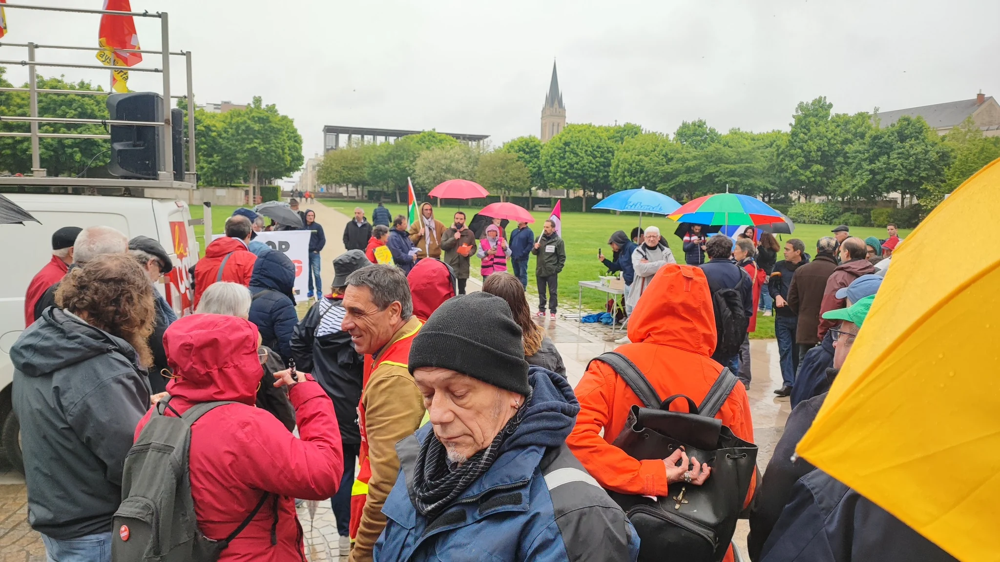
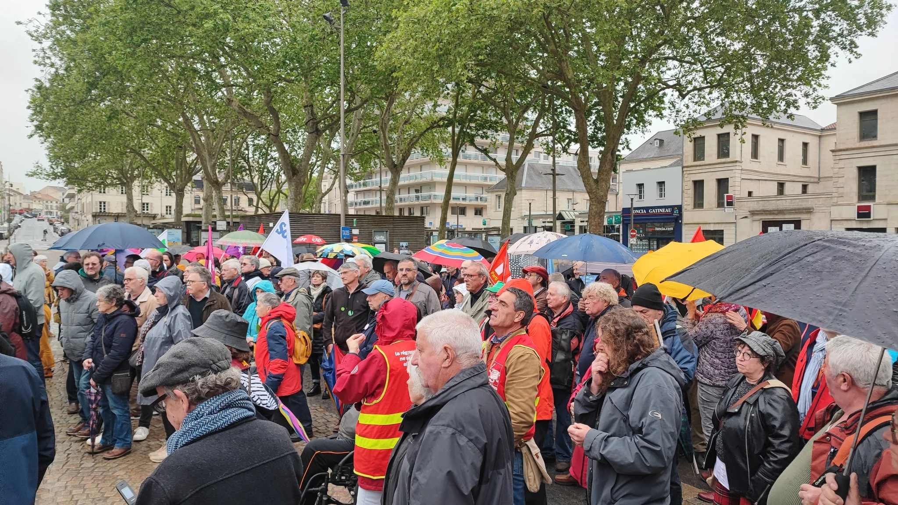
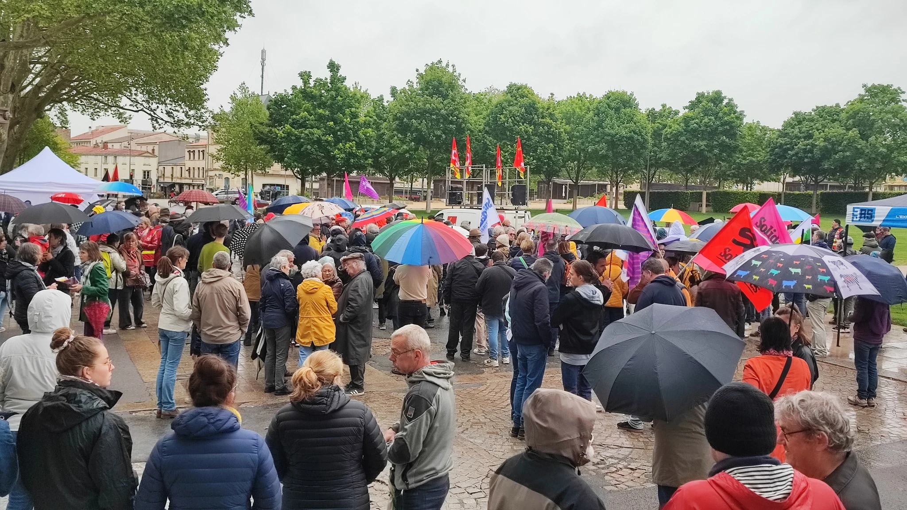

Compte rendu fédéral
À Niort, le 1er Mai pour l’emploi, les salaires et les services publics
Date indiquée par Facebook · 1 mai 2024
Repères éditoriaux
Nous nous sommes mobilisés à l’appel de la CGT, de la FSU et de Solidaires. À Niort, les revendications du 1er mai liaient les salaires et la protection sociale aux libertés et à une paix juste et durable.
Texte conservé avec la publication
1er Mai à Niort
Mobilisation en ce 1er mai à l'appel de la CGT, la FSU, Solidaires contre l'austérité, pour l'emploi, les salaires, les services publics, la protection sociale, les libertés et la paix juste et durable dans le monde.
#niort
#DeuxSèvres
#1ermai



Sources
Archive rouge · export Facebook · AR-0002-FB-01405
À lire aussi · Le Festitaff à Thouars, puis le 1er Mai à Niort et Bressuire